解析 Spring Batch
Table of Contents
如今微服务架构讨论的如火如荼。但在企业架构里除了大量的OLTP交易外，还存在海量的批处理交易。在诸如银行的金融机构中，每天有3-4万笔的批处理作业需要处理。针对OLTP，业界有大量的开源框架、优秀的架构设计给予支撑；但批处理领域的框架确凤毛麟角。是时候一起来了解下批处理的世界哪些优秀的框架和设计了
初识批处理典型场景
对账 是典型的批处理业务处理场景，各个金融机构的往来业务和跨主机系统的业务都会涉及到对账的过程，如大小额支付、银联交易、人行往来、现金管理、POS业务、ATM业务、证券公司资金账户、证券公司与证券结算公司
对账 是典型的 批处理业务 处理场景，各个金融机构的往来业务和跨主机系统的业务都会涉及到对账的过程，如大小额支付、银联交易、人行往来、现金管理、POS业务、ATM业务、证券公司资金账户、证券公司与证券结算公司：
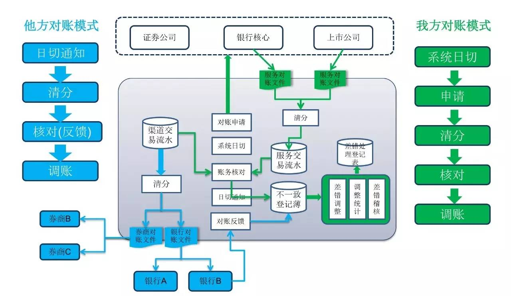
下面是某行网银的部分日终跑批实例场景需求：
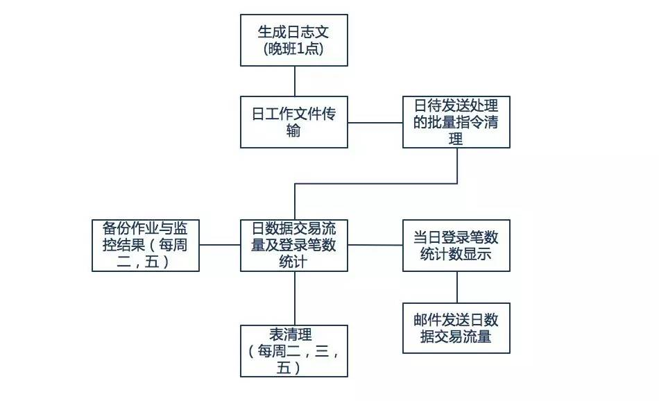
涉及到的需求点包括：
- 批量的每个单元都需要 错误处理 和 回退
- 每个单元在 不同平台 中运行
- 需要有 分支 选择
- 每个单元需要 监控 和 获取 单元处理 日志
- 提供 多种触发规则 ，按日期，日历，周期触发
除此之外典型的批处理适用于如下的业务场景：
- 定期提交批处理任务（日终处理）
- 并行批处理：并行处理任务
- 企业消息驱动处理
- 大规模的并行处理
- 手动或定时重启
- 按顺序处理依赖的任务(可扩展为工作流驱动的批处理)
- 部分处理：忽略记录(例如在回滚时)
- 完整的批处理事务
与OLTP类型交易不同，批处理作业两个典型特征是
- 批量执行 ：前者能够处理大批量数据的导入、导出和业务逻辑计算
自动执行 （需要无人值守）：后者无需人工干预，能够自动化执行批量任务
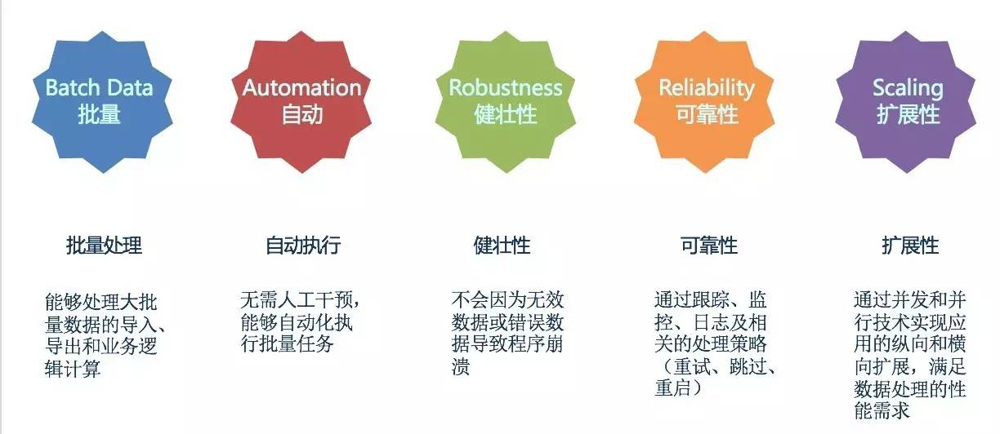
在关注其基本功能之外，还需要关注如下的几点：
- 健壮性 ：不会因为无效数据或错误数据导致程序崩溃
- 可靠性 ：通过跟踪、监控、日志及相关的处理策略（重试、跳过、重启）实现批作业的可靠执行
- 扩展性 ：通过并发或者并行技术实现应用的纵向和横向扩展，满足海量数据处理的性能需求
通过Spring Batch框架可以构建出轻量级的健壮的并行处理应用，支持事务、并发、流程、监控、纵向和横向扩展，提供统一的接口管理和任务管理
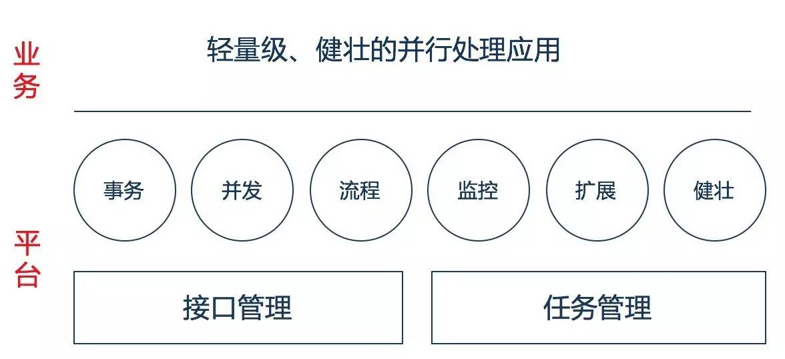
框架提供了诸如以下的核心能力，让大家更关注在业务处理上。更是提供了如下的丰富能力：
- 明确分离批处理的执行环境和应用
- 将通用核心的服务以接口形式提供
- 提供“开箱即用” 的简单的默认的核心执行接口
- 提供Spring框架中配置、自定义、和扩展服务
- 所有默认实现的核心服务能够容易的被扩展与替换，不会影响基础层
- 提供一个简单的部署模式，使用Maven进行编译
探秘领域模型及关键架构
先来个Hello World示例，一个典型的批处理作业：
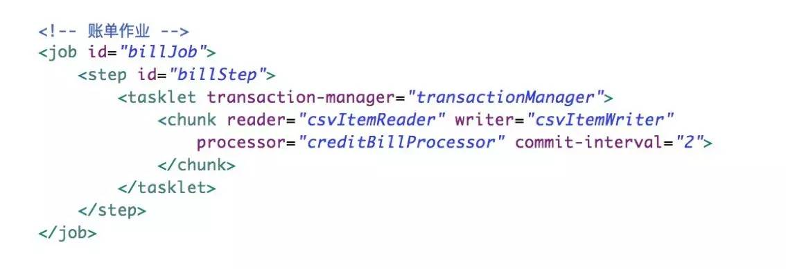
典型的一个作业分为3部分：作业读、作业处理、作业写，也是典型的三步式架构。整个批处理框架基本上围绕 Read 、 Process 、 Writer 来处理。除此之外，框架提供了 作业调度器 、 作业仓库 （用以 存放Job的元数据信息 ，支持 内存 、 DB 两种模式）。完整的领域概念模型参加下图：
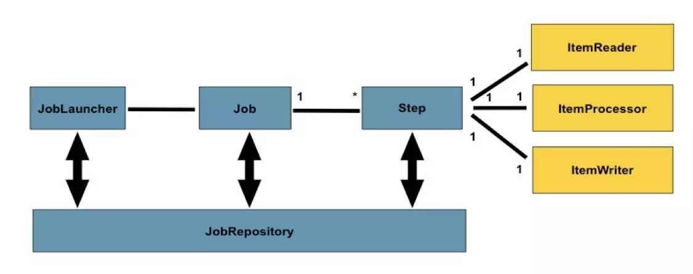
Job Launcher
作业调度器 是Spring Batch框架基础设施层提供的 运行Job的能力 。通过给定的 Job名称 和 Job Parameters ，可以通过Job Launcher执行Job
通过Job Launcher可以在Java程序中调用批处理任务，也可以在通过 命令行 或者其它框架（如定时调度框架 Quartz ）中调用批处理任务
Job Repository
作业仓库 是 存储Job执行期的元数据 ，这里的元数据是指：
- Job Instance
- Job Execution
- Job Parameters
- Step Execution
- Execution Context等
作业仓库提供两种默认实现：
- 存放在内存中
- 将元数据存放在数据库中。通过将元数据存放在数据库中，可以随时监控批处理Job的执行状态。Job执行结果是成功还是失败，并且使得在Job失败的情况下重新启动Job成为可能
运行期的模型
批处理框架运行期的模型也非常简单：
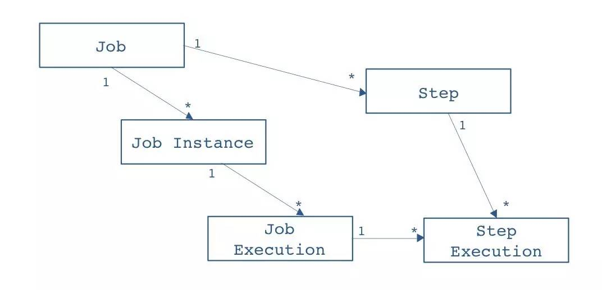
Step
Step表示作业中的一个 完整步骤 ，一个Job可以有一个或者多个Step组成
Job Instance
作业实例 是一个运行期的概念，Job每执行一次都会涉及到一个Job Instance。Job Instance来源可能有两种：
- 根据设置的Job Parameters从Job Repository 中获取一个
- 如果根据Job Parameters从Job Repository没有获取Job Instance，则新创建一个新的Job Instance
Job Execution
Job Execution表示 Job执行的句柄 ，一次Job的执行可能成功也可能失败：
- 只有Job执行成功后，对应的Job Instance才会被完成
- 因此在Job执行失败的情况下，会有 一个Job Instance对应多个Job Execution 的场景发生
概念总结
批处理的典型概念模型，其设计非常精简的十个概念，完整支撑了整个框架：
| 关键词 | 描述 |
| Job Repository | 基础组件，用来持续化 Job 的元数据，默认使用内存 |
| Job Laucher | 基础组件，用来启动 Job |
| Job | 应用组件，是用来执行 Batch 操作的基础执行单元 |
| Step | Job 的一个阶段，Job由一组Step构成 |
| Tasklet | Step的一个事务过程，包含重复执行，同步，异步等策略 |
| Item | 从数据源读出或写入的一条数据 |
| Chunk | 给定数量的 Item 集合 |
| Item Reader | 从给定的数据源读取 Item 集合 |
| Item Processor | 在 Item 写入数据源之前进行数据清洗 （转换，校验，过滤） |
| Item Writer | 把 Chunk 中包含的 Item 写入数据源 |
功能
Job
Job提供的核心能力包括作业的抽象与继承，类似面向对象中的概念。对于执行异常的作业，提供 重启 的能力
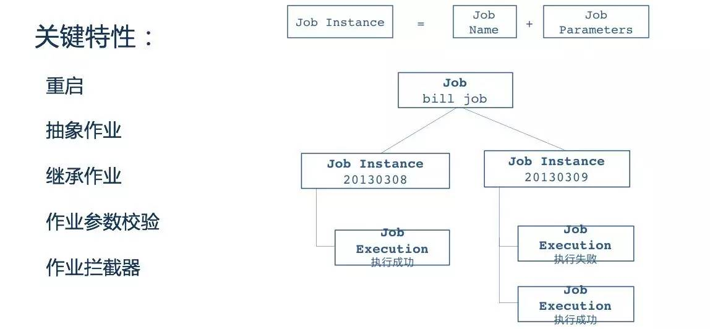
框架在Job层面，同样提供了 作业编排 的概念，包括 顺序 、 条件 、 并行 作业编排：
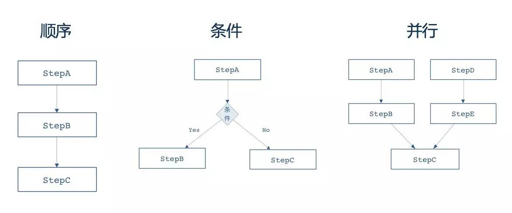
在一个Job中配置多个Step。不同的Step间可以顺序执行，也可以按照不同的条件有选择的执行（条件通常使用Step的退出状态决定），通过next元素或者decision元素来定义跳转规则
Step
为了提高多个Step的执行效率，框架提供了 Step并行执行 的能力。Step包含了一个实际运行的批处理任务中的所有必需的信息，其实现可以是非常简单的业务实现，也可以是非常复杂的业务处理，Step的复杂程度通常是业务决定的
使用split进行声明，通常该情况下需要Step之间没有任何的依赖关系，否则容易引起业务上的错误
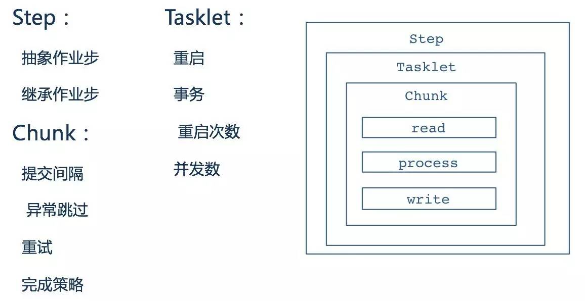
每个Step由ItemReader、ItemProcessor、ItemWriter组成，当然根据不同的业务需求，ItemProcessor可以做适当的精简。同时框架提供了大量的ItemReader、ItemWriter的实现，提供了对FlatFile、XML、Json、DataBase、Message等多种数据类型的支持
框架还为 Step 提供了 重启 、 事务 、 重启次数 、 并发数 ；以及 提交间隔 、 异常跳过 、 重试 、 完成策略 等能力。基于Step的灵活配置，可以完成常见的业务功能需求。其中三步走（Read、Processor、Writer）是批处理中的经典抽象
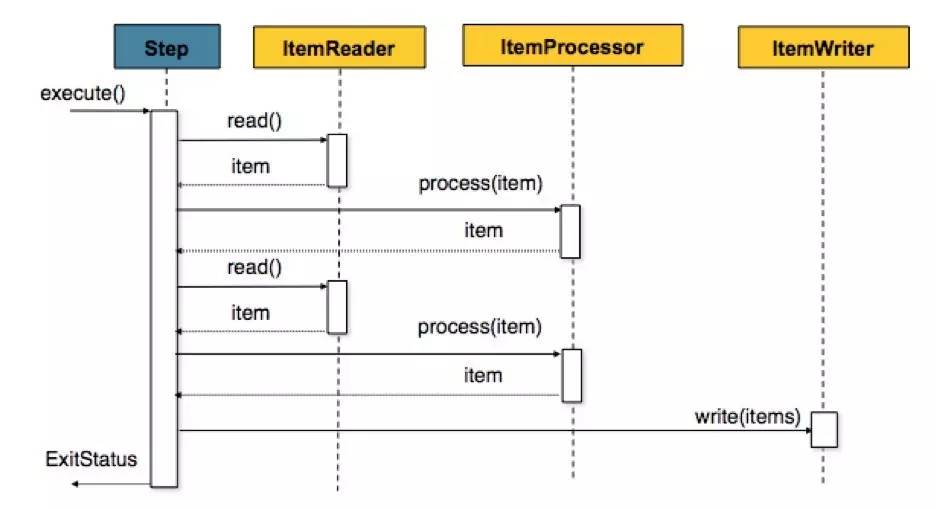
事务
作为面向批的处理，在Step层提供了 多次读 、 处理 ， 一次提交 的能力。
在Chunk的操作中，可以通过属性 commit-interval 设置 read 多少条记录后进行一次提交。通过设置commit-interval的间隔值，减少提交频次，降低资源使用率。Step的 每一次提交作为一个完整的事务 存在。默认采用 Spring提供的声明式事务管理 模式，事务编排非常方便。如下是一个声明事务的示例：
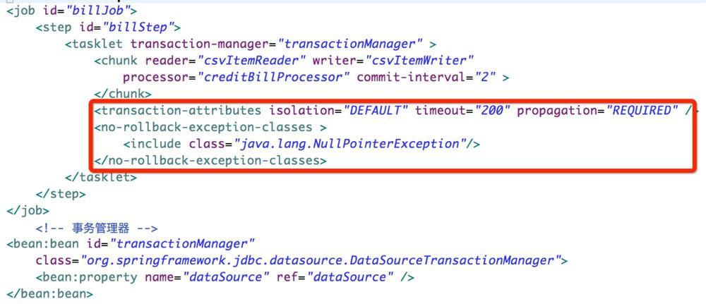
框架对于事务的支持能力包括：
- Chunk支持事务管理，通过commit-interval设置每次提交的记录数
- 支持对每个Tasklet设置细粒度的事务配置： 隔离界别 、 传播行为 、 超时
- 支持 rollback 和 no rollback ，通过 skippable-exception-classes 和 no-rollback-exception-classes 进行支撑
- 支持 JMS Queue 的事务级别配置
数据模型
在框架资深的模型抽象方面，Spring Batch也做了极为精简的抽象：
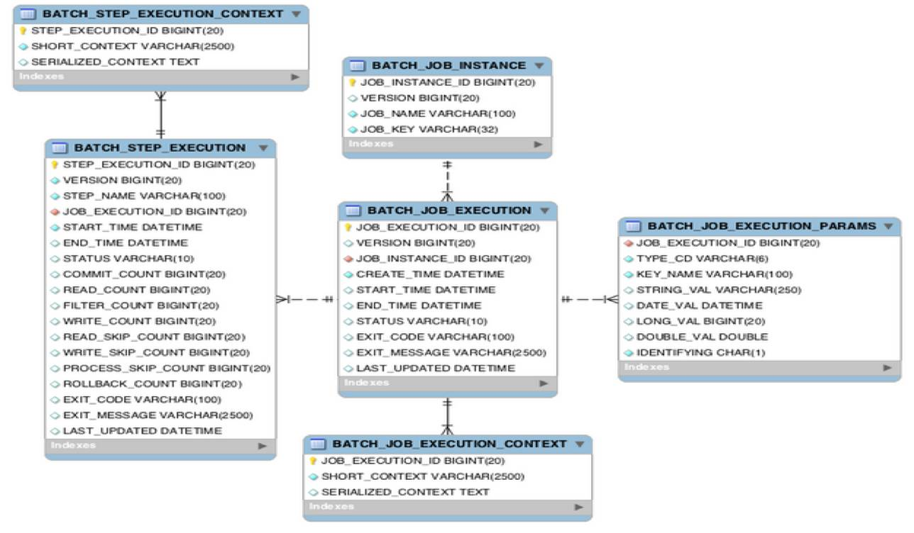
仅仅使用六张业务表存储了所有的元数据信息（包括Job、Step的实例，上下文，执行器信息，为后续的监控、重启、重试、状态恢复等提供了可能）。
- BATCH _ JOB _ INSTANCE： 作业实例表 ，用于存放 Job的实例 信息
- BATCH _ JOB _ EXECUTIONPARAMS： 作业参数表 ，用于存放 每个Job执行时候的参数 信息，该参数实际对应Job实例的
- BATCH _ JOB _ EXECUTION： 作业执行器表 ，用于存放 当前作业的执行 信息 ，比如 创建时间 ， 执行开始时间 ， 执行结束时间 ，执行的那个 Job实例 ， 执行状态 等
- BATCH _ JOB _ EXECUTION _ CONTEXT： 作业执行上下文表 ，用于存放 作业执行器上下文 的信息
- BATCH _ STEP _ EXECUTION： 作业步执行器表 ，用于存放每个 Step执行器 的信息，比如 作业步开始执行时间 ， 执行完成时间 ， 执行状态 ， 读写次数 ， 跳过次数 等信息
- BATCH _ STEP _ EXECUTION _ CONTEXT： 作业步执行上下文表 ，用于存放每个 作业步上下文 的信息
实现作业健壮性与扩展性
强壮性
批处理要求Job必须有较强的 健壮性 ，通常Job是批量处理数据、无人值守的，这要求在Job执行期间能够应对各种发生的异常、错误，并对Job执行进行有效的跟踪。一个健壮的Job通常需要具备如下的几个特性：
- 容错性 ：在Job执行期间非致命的异常，Job执行框架应能够进行有效的容错处理，而不是让整个Job执行失败；通常只有致命的、导致业务不正确的异常才可以终止Job的执行
- 可追踪性 ：Job执行期间任何发生错误的地方都需要进行有效的记录，方便后期对错误点进行有效的处理。例如在Job执行期间任何被忽略处理的记录行需要被有效的记录下来，应用程序维护人员可以针对被忽略的记录后续做有效的处理
- 可重启性 : Job执行期间如果因为异常导致失败，应该能够在失败的点重新启动Job；而不是从头开始重新执行Job
框架提供了支持上面所有能力的特性，包括 Skip （跳过记录处理）、 Retry （重试给定的操作）、 Restart （从错误点开始重新启动失败的Job）：
- Skip : 在对数据处理期间，如果数据的某几条的格式不能满足要求，可以通过Skip跳过该行记录的处理，让Processor能够顺利的处理其余的记录行
- Retry : 将给定的操作进行多次重试，在某些情况下操作因为短暂的异常导致执行失败，如网络连接异常、并发处理异常等，可以通过重试的方式避免单次的失败，下次执行操作时候网络恢复正常，不再有并发的异常，这样通过重试的能力可以有效的避免这类短暂的异常
Restart : 在Job执行失败后，可以通过重启功能来继续完成Job的执行。在重启时候，批处理框架允许在上次执行失败的点重新启动Job，而不是从头开始执行，这样可以大幅提高Job执行的效率
| 特性 | 功能 | 适用时机 | 适用场景 |
| Skip | 跳过错误的记录，保证 Job 正确执行 | 非致命的异常 | 面向 Chunk 的 Step |
| Retry | 重试给定的操作 | 短暂的异常，比如网络，并发，经过重试后该异常不会重现 | 面向 Chunk 的 Step 或者应用程序代码 |
| Restart | Job 执行失败后，重启 Job 实例 | 因异常错误后 Job 失败 | Job 执行重新启动 |
可扩展性
对于扩展性，框架提供的扩展能力包括如下的四种模式 :
- Multithreaded Step : 多线程执行一个Step
- Parallel Step : 通过多线程并行执行多个Step
- Remote Chunking : 在远端节点上执行分布式Chunk操作
- Partitioning Step : 对数据进行分区，并分开执行
Multithreaded Step
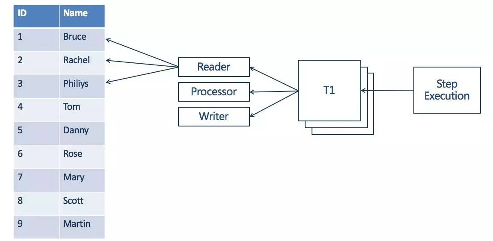
批处理框架在Job执行时默认使用 单个线程完成任务 的执行，同时框架提供了 线程池 的支持（Multithreaded Step模式），可以在Step执行时候进行并行处理，这里的并行是指同一个Step使用线程池进行执行，同一个Step被并行的执行。使用tasklet的属性 task-executor 可以非常容易的将普通的Step变成多线程Step。Multithreaded Step的实现示例：
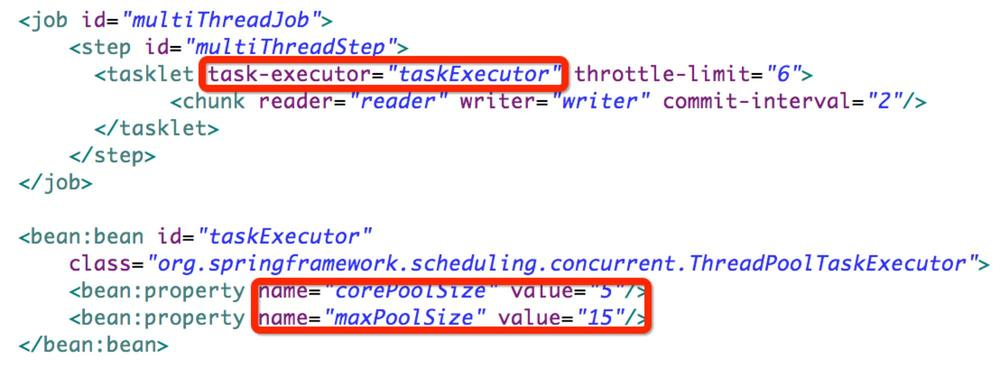
线程安全 Step
需要注意的是Spring Batch框架提供的大部分的 ItemReader 、 ItemWriter 等操作都是 线程不安全 的。可以通过扩展的方式显现线程安全的Step。下面为大家展示一个扩展的实现：
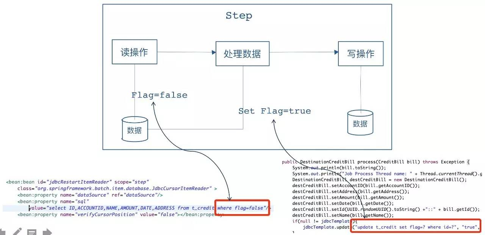
需求：针对数据表的批量处理，实现线程安全的Step，并且支持重启能力，即在执行失败点可以记录批处理的状态
对于示例中的数据库读取组件 JdbcCursorItemReader ，在设计数据库表时，在表中 增加一个字段Flag ，用于 标识当前的记录是否已经读取并处理成功 ，如果处理成功则标识Flag=true，等下次重新读取的时候，对于已经成功读取且处理成功的记录直接跳过处理
Multithreaded Step（多线程步）提供了多个线程执行一个Step的能力，但这种场景在实际的业务中使用的并不是非常多 更多的业务场景是Job中不同的Step没有明确的先后顺序，可以在执行期并行的执行
Parallel Step
提供单个节点横向扩展的能力：
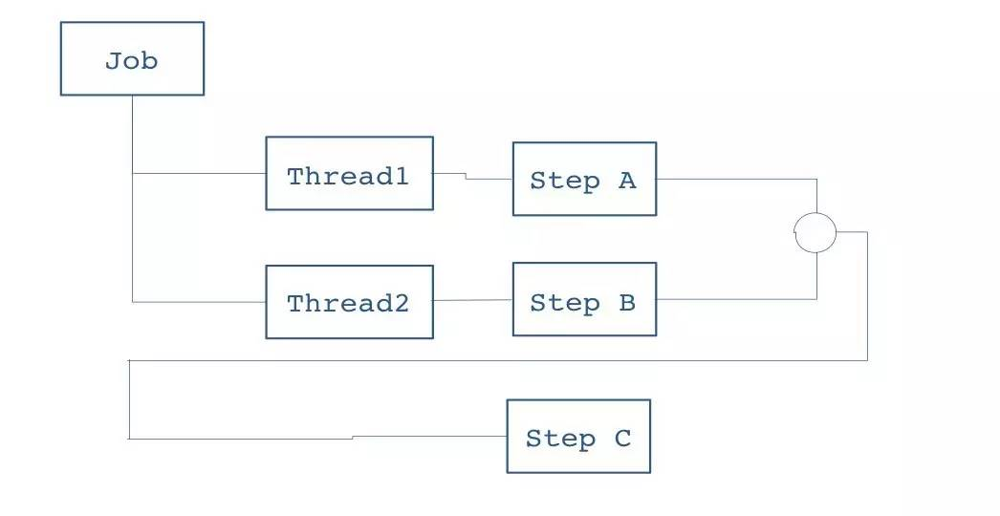
Step A、Step B两个作业步由不同的线程执行 两者均执行完毕后，Step C才会被执行
框架提供了并行Step的能力。可以通过Split元素来定义并行的作业流，并制定使用的线程池：
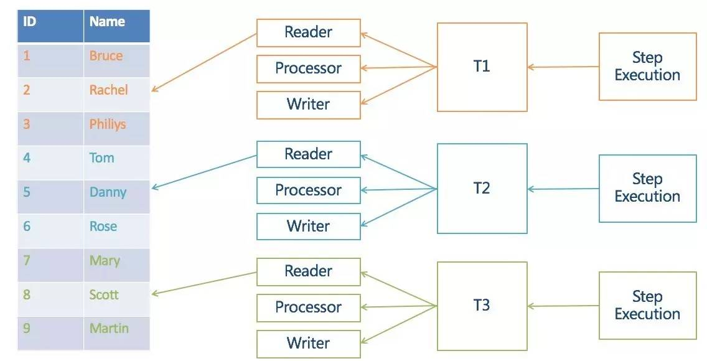
每个作业步并行处理不同的记录，示例中三个作业步，处理同一张表中的不同数据
并行Step提供了在一个节点上横向处理，但随着作业处理量的增加，有可能一台节点无法满足Job的处理 此时可以采用远程Step的方式将多个机器节点组合起来完成一个Job的处理
Remote Chunk
远程Step技术本质上是将对 Item读、写的处理逻辑进行分离 ；通常情况下 读的逻辑放在一个节点 进行操作，将 写操作分发到另外的节点 执行
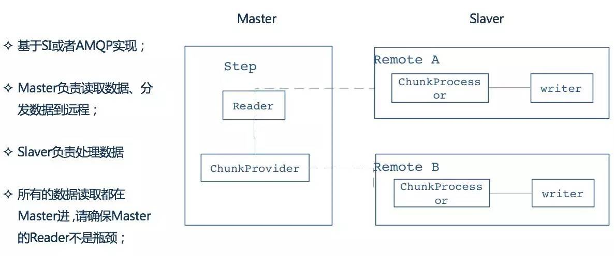
远程分块是一个把step进行技术分割的工作，不需要对处理数据的结构有明确了解。任何输入源能够使用单进程读取并在动态分割后作为"块"发送给远程的工作进程。远程进程实现了 监听者模式 ， 反馈请求 、 处理数据 最终将 处理结果异步返回 。请求和返回之间的传输会被确保在发送者和单个消费者之间：
- 在 Master 节点，作业步负责 读取数据 ，并将读取的数据通过远程技术发送到指定的远端节点上
- Slave 节点进行处理，处理完毕后
- Master负责 回收Slave端执行 的情况
在Spring Batch框架中通过两个核心的接口来完成远程Step的任务，分别是：
- ChunkProvider ：根据给定的 ItemReader 操作 产生批量的Chunk操作
- ChunkProcessor ：负责获取ChunkProvider产生的Chunk操作，执行具体的写逻辑
Spring Batch中对远程Step没有默认的实现，但可以借助 SI 或者 AMQP 实现来实现远程通讯能力，基于 SI 实现Remote Chunking模式的示例：
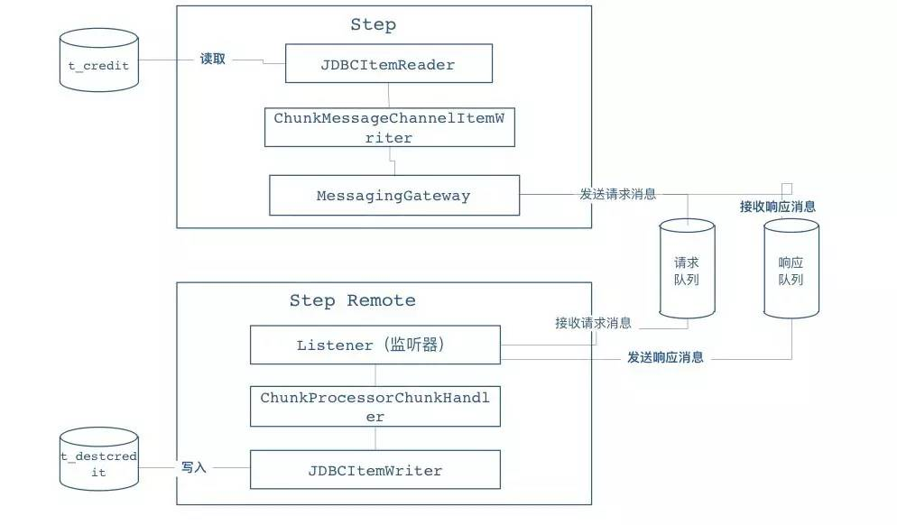
- Step本地节点负责 读取数据 ，并通过 MessagingGateway 将请求 发送到远程Step 上
- 远程Step提供了 队列的监听器 ，当 请求队列中有消息 时候 获取请求信息 并交给 ChunkHander 负责处理
Partitioning Step
分区模式 需要对数据的结构有一定的了解，如 主键的范围 、 待处理的文件的名字 等
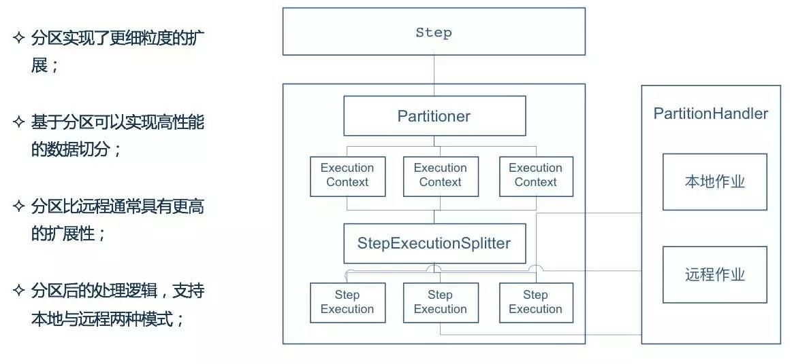
这种模式的优点在于 分区中每一个元素的处理器都能够像一个普通Spring Batch任务的单步 一样运行，也不必去实现任何特殊的或是新的模式，来让他们能够更容易配置与测试。通过分区可以实现以下的优点：
- 分区实现了 更细粒度 的扩展
- 基于分区可以实现 高性能的数据切分
- 分区比远程通常具有 更高的扩展性
- 分区后的处理逻辑，支持 本地 与 远程 两种模式
分区作业典型的可以分成两个处理阶段
- 数据分区
- 分区处理
数据分区
根据特殊的规则（例如：根据文件名称，数据的唯一性标识，或者哈希算法）将数据进行合理的数据切片，为不同的切片生成数据执行上下文Execution Context、作业步执行器Step Execution。可以通过接口 Partitioner 生成 自定义的分区逻辑 ：
- 默认实现了对 多文件 org.springframework.batch.core.partition.support.MultiResourcePartitioner
- 可以自行扩展接口 Partitioner 来实现自定义的分区逻辑
分区处理
通过数据分区后，不同的数据已经被分配到不同的作业步执行器中，接下来需要交给分区处理器进行作业，分区处理器可以本地执行也可以远程执行被划分的作业。接口 PartitionHandler 定义了 分区处理的逻辑 ：
- 默认实现了 本地多线程的分区处理 org.springframework.batch.core.partition.support.TaskExecutorPartitionHandler
- 可以自行扩展接口 PartitionHandler 来实现自定义的分区处理逻辑
文件分区
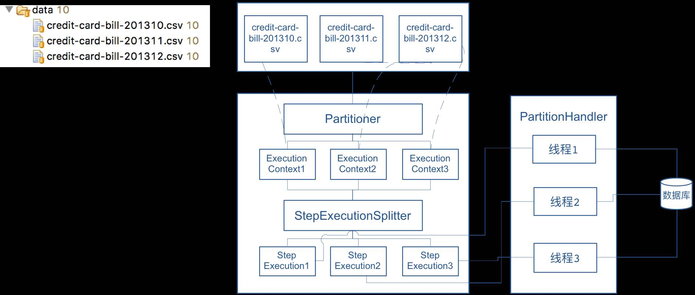
Spring Batch框架提供了对文件分区的支持，实现类 org.springframework.batch.core.partition.support.MultiResourcePartitioner 提供了对文件分区的默认支持，根据文件名将不同的文件处理进行分区，提升处理的速度和效率，适合有大量小文件需要处理的场景
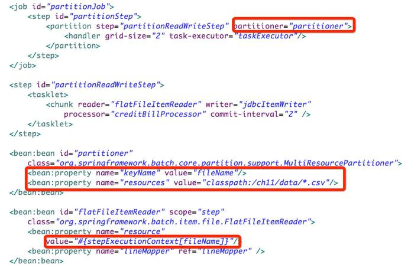
示例展示了将不同文件分配到不同的作业步中，使用 MultiResourcePartitioner 进行分区，意味着 每个文件会被分配到一个不同的分区 中
扩展性总结
| 扩展模式 | Local/Remote | 说明 |
| Multithreaded Step | Local | Step 可以使用多线程执行 （通常一个 Step 使用一个线程执行） |
| Parallel Step | Local | Job 执行期间不同的 Step 并行处理，由不同的线程并行执行（通常 Job 的 Step 都是顺序执行，而且是一个线程执行） |
| Partitioning Step | Local/Remote | 通过将任务进行分区，不同的 Step 处理不同的任务数据，达到提高 Job 的效率 |
| Remote Chunking | Remote | 将任务分发到远程不同的节点进行并行处理，提高 Job 的处理速度和效率 |